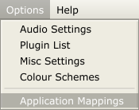
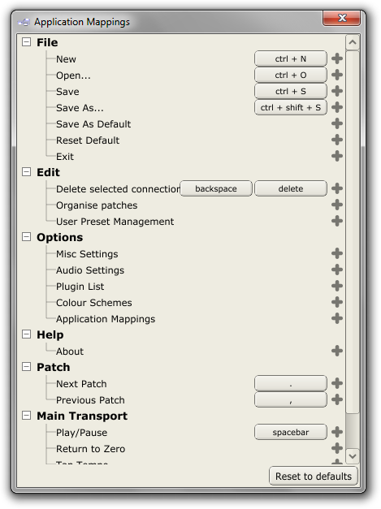
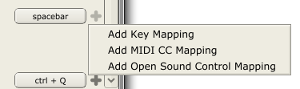
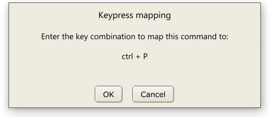
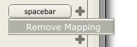

Application Mappings
In the same way that plugin parameters can be mapped to MIDI and OSC inputs, multiple functions of the Pedalboard app itself can be mapped to MIDI and OSC inputs, as well as keyboard commands/shortcuts.

To setup or alter the application mappings, select Application Mappings from the Options menu.

The Application Mappings window lists all the functions which can be mapped to keyboard, MIDI and OSC triggers. To add a new mapping, click the + button adjacent to the relevant function.

From here you can select which type of mapping you want to add, upon which a dialog like the following will appear, letting you select the input you're interested in.

To delete an existing mapping, simply click that mapping's button and select Remove Mapping.

The application mappings are stored in a file named AppMappings.xml within the Pedalboard's user data directory. See the Pedalboard Files page for more details.